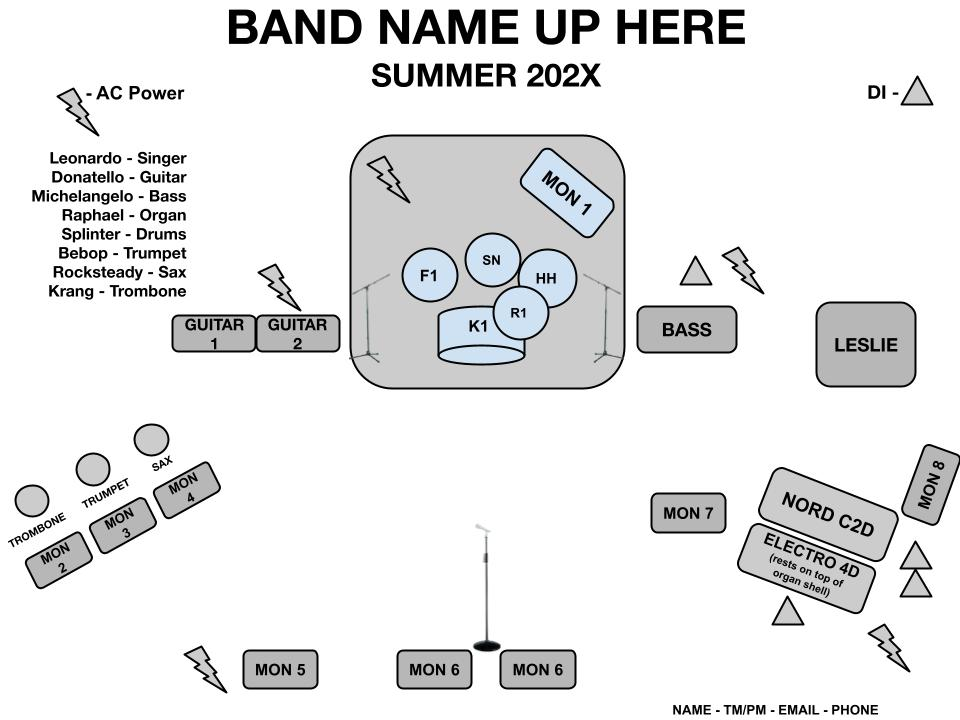

squealersbandi@gmail.com
Bio-versiot TODO: suomeksi ja englanniksi
Lyhyt versio
Lyhyt versio suomeksi
Lyhyt bio suomeksi.
Pitkä versio suomeksi
Pitkä bio suomeksi.
Short version in english
Squealers is a rock ’n’ roll band from Jyväskylä, Finland. Our focus
is on writing tight, riff-driven original music. Our 2023 debut EP Big
Dog introduced a sound rooted in a simple yet effective groove.
Heavily influenced by AC/DC, we mix in a few covers live — not for
show, but as a nod to our roots. No flash, no hype — just solid rock
played right.
Long version in english
Squealers is a rock ‘n’ roll band from Jyväskylä, Finland, dedicated
to writing and performing original music with a strong, no-nonsense
approach. Our sound is rooted in sharp riffs, tight groove, and the
kind of feel that comes from playing with intention — no flash, just
focus. Formed in 2023, Squealers released its debut EP Big Dog the
same year — a five-track collection that leans into classic-rock
dynamics and tight rhythms. It’s a stripped-back sound that nods to
rock ’n’ roll traditions without trying to relive them. While original
material is the heart of our live set, we also embrace our biggest
influence — AC/DC — by including a few covers as part of our tribute
to where it all started. The goal isn’t imitation, but honoring the
raw power and simple yet effective touch that inspired us. Having
played a handful of local gigs, Squealers is steadily building a name
with honest music, tight playing, and a grounded attitude. For us,
rock 'n' roll is about substance, not spectacle — and we’re just
getting started.
Tekniikka TODO: oikea

Bändin jäsenet
- Tuukka
- Antti
- Veikko (kasvisruokavalio)
- Taneli
- Jukka